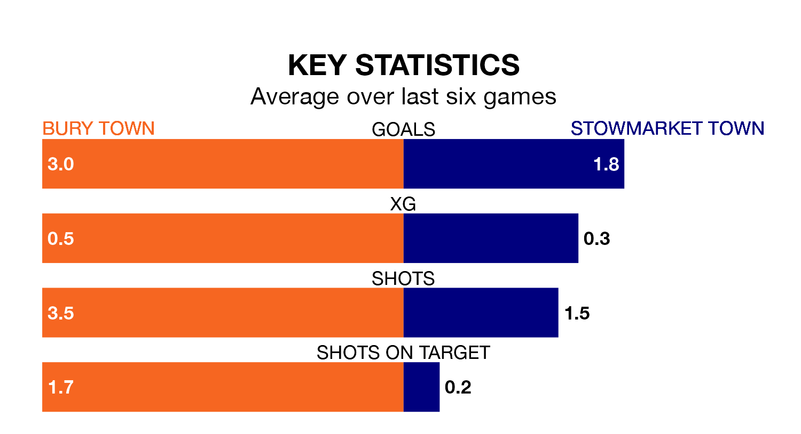

Bury Town and Stowmarket Town come into Saturday's kick-off at Ram Meadow in contrasting spells, with the home team hitting a rich vein of form while the visitors struggle.
Bury have won five and drawn one of the last six, while Stowmarket have taken two draws and four losses.
Stowmarket are bottom of the table after 22 games, of which they have won none and drawn four, earning four points.
Bury are 13 places ahead of Stowmarket Town in seventh, with 10 wins and five draws putting them on 35 points.
With 23 goals in 22 games so far this season, the away side are scoring at below the league average rate with 1.0 goals per game. And they are conceding more than average, letting in 70 goals at a rate of 3.2 per game.
Bury Town, meanwhile, are above average scorers, with 2.4 goals per game, compared to a league average of 1.7. They have conceded 1.6 goals per game.
In the last 10 years, Bury and Stowmarket have played each other on six occasions. Bury won one of them, Stowmarket four, and they drew once.
On average, Bury scored 1.2 goals and Stowmarket 1.5 in those matches.
Their last meeting was on September 30, when Bury won 5-0 away.
Bury's last match was on Tuesday, a 2-0 win against Redbridge.
Stowmarket lost 3-2 against Wroxham last time out, on January 20.
Updated: 08:51 (UTC), 25/01/24